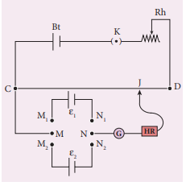
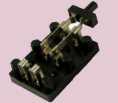

To compare the emf of the given two cells using a potentiometer.
Battery eliminator, key, rheostat, D P D T switch, Lechlanche and Daniel cells, galvanometer, high resistance box, pencil jockey and connecting wires.
epsilon one by epsilon two equal to l one by l two no unit
where, epsilon one and epsilon are the emf of Lechlanche and Daniel cells respectively (V) l one and l two are the balancing lengths for Lechlanche and Daniel cells respectively (centimeter)

Table: To find the ratio of emf of two cell
Serial number |
Balancing length for Lechlanche cell, l one (centimeter) |
Balancing length for Daniel cell, l two (centimeter) |
epsilon one by epsilon two equal to l one by l two |
Serial number 1 |
|
|
|
Serial number 2 |
|
|
|
Serial number 3 |
|
|
|
Serial number 4 |
|
|
|
Serial number 5 |
|
|
|
epsilon one by epsilon two
epsilon one by epsilon two equal to l, one by l, two
Ratio of emf of the given two cells equal to dash (no unit)
Note:
D P D T switch

Double Pole Double Throw (D P D T) switch is a 6-terminal key with a throw switch (metal handle) attached to the common terminals M and N. The two-given cells are connected to the pairs of terminals M one and N one and, N one and N two.
When the handle is thrown to one side, say M one and M two, the cell that is connected to that pair of terminals is included with the primary circuit